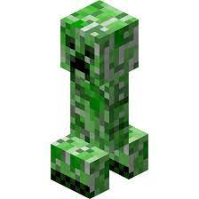

Minecraft Wiki
Minecraft — это строительная игра в жанре «песочница», разработанная компанией Mojang Studios и разделённая на два издания: Java и Bedrock . Игровой процесс включает в себя взаимодействие игроков с игровым миром через размещение и разрушение различных блоков в трёх разных измерениях.

Мобы Minecraft
В игры встречаются мобы. Они бывают мирные и враждебные. Ниже приведен не полный список враждебных мобов.
Крипер
Скелет
Зомби
Паук
Дополнительная информация
| № | Имя мобов | Сила. | Количество | Сложность моба | Вероятность встретить |
|---|---|---|---|---|---|
| 1. | Зомби | 5 | 15 шт. | 10 | 50% |
| 2. | Паук | 10 | 17 шт. | 15 | 50% |
| 3. | Крипер | 25 | 20 шт. | 20 | 50% |
| ИТОГО МОБОВ: | 52 шт. | СРЕДНЯЯ ВЕРОЯТНОСТЬ: | 50% | ||
Авторы
Скачать игру